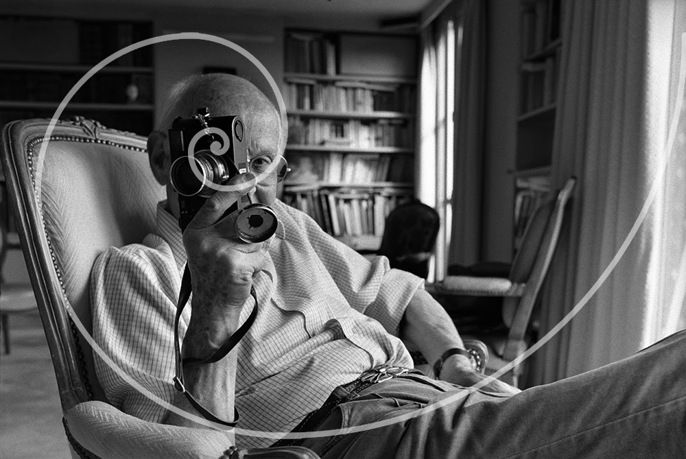
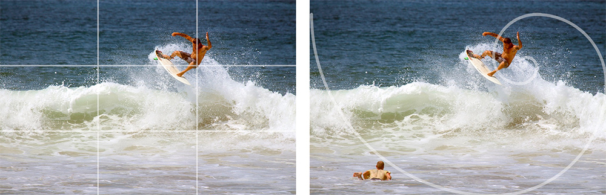
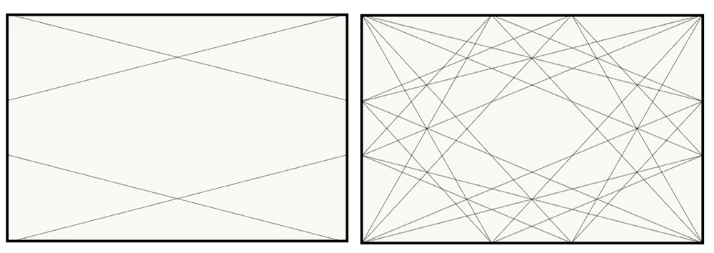

Using The Golden Ratio in Photography
The Fibonacci spiral is one of the main ways photographers can use the golden ratio in photography.
Many famous photographers are known for their use of the golden ratio in photography. Ansel Adams used it often in his the landscape portraits that he captured.
Henri Cartier-Bresson, used it as he capture life as it happened. Cartier-Bresson used a 50mm lens his entire career, focusing less on gear and more on composition. Below is a self-portrait he took using the Fibonacci spiral as the compositional technique.
Example
Using the surfer at the bottom to lead the eye through the image, the viewer ends up at the surfer on the wave. You may be saying to yourself, “that’s just the rule of thirds.” You’re correct, the rule of thirds is a part of this image.
However, the surfer in the bottom left corner doesn’t follow the rule of thirds, yet adds balance, depth, and helps to lead the eye to the subject. That surfer in the bottom left brings all of this because he is placed in a location to use the Fibonacci spiral.
Create using the Golden Ratio in Photography
Creating images by thinking of a ratio can be can be incredibly difficult. To make things worse, each rectangle can be made into smaller golden rectangles as well.
Place those strong lines on the golden ratio lines to help create more interest in the image.
On the image of the building, the line between the dark and light portions of the building is placed on a golden ratio line, as well as the top corners.
In the bridge photo, the lines of the railing match golden ratio lines to help create an image that leads the viewers eye, and adds interest.


